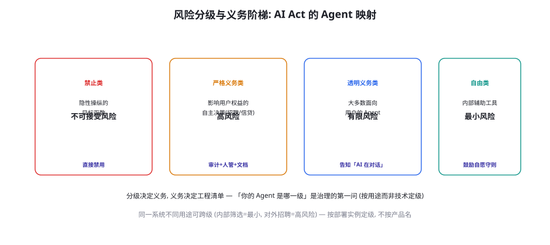
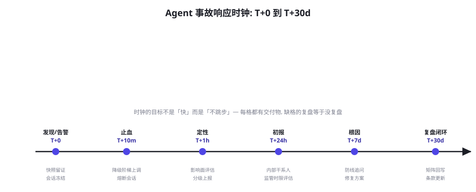

治理、合规与责任：AI Act 时代的 Agent 运营
安全篇收官章，从工程升维到组织与法律。本章回答三个治理问题：你的 Agent 在监管风险阶梯的哪一级（分级决定义务清单）；出了事故怎么响应（事故时钟与责任分配）；以及日常运营要维护哪些「治理资产」（审计日志、治理文档、风险接受流程）。核心立场：合规不是工程的对立面——前七章的每一份工程产物（审计日志、凭证链、Spec 文档、威胁矩阵）都是合规的原料，治理是「让工程的价值被组织与监管看见」的翻译层。
风险分级：你的 Agent 是哪一级

四级阶梯的 Agent 场景细化与义务清单：不可接受风险——操纵性目标函数（优化「让用户停留」而非「服务用户」的隐性设计）、社会评分类应用——直接禁用——Agent 的对照警示是「目标函数的伦理审计」（你的 Agent 优化什么指标？该指标是否会对用户产生操纵性压力——第 76 章成本经济学的伦理面）；高风险——影响用户重大权益的自主决策（招聘筛选、信贷评估、执法辅助、医疗分诊）——义务包最重：风险管理系统、数据治理、技术文档、日志留存、人类监督设计、准确性与鲁棒性证据、以及「基本权利影响评估」——Agent 对照的工程含义：L2/L3 动作（第 60 章）如果触及用户权益，「人类监督设计」必须真实有效（不是橡皮图章的确认按钮——第 60 章确认疲劳的合规面）；有限风险（透明义务）——大多数面向用户的 Agent——核心义务是「明示 AI 身份」（用户有权知道在和 AI 对话）与生成内容的水印/标注（深度合成规定类）；最小风险——内部辅助工具——无强制义务但鼓励自愿守则（你的 Spec 文档就是最好的自愿守则）。定级的三个实操要点：按部署实例而非产品名（同一 Agent 内部用与对外用是两级）、按「自主性 × 影响面」判断（自主决策权越大、影响面越广，级别越高——第 60 章操作分级与监管分级的同构）、定级结论要写进治理文档并随功能演进复审（新能力上线可能跨级）。
| 治理资产 | 内容 | 工程来源（已建成） | 合规用途 | 维护节奏 |
|---|---|---|---|---|
| 审计日志链 | 动作、参数、凭证、审批、出站 | 第 60 章五步校验链 + 第 61 章钩子 | 决策追溯、事故取证、监管检查 | 持续生成，年检抽样 |
| 技术文档包 | 系统架构、数据流、模型版本、评测结果 | 第 56 章 Harness + 第 50 章报告 | 高风险义务的核心交付物 | 随版本更新 |
| 风险管理文档 | 威胁矩阵、登记册、剩余风险声明 | 第 58 章登记册 + 第 55 章覆盖度矩阵 | 风险管理的证据链 | 季度复审 |
| 行为准则 Spec | 条款、样本、修订历史、验收报告 | 第 64 章 Spec 工程 | 「决策依据可追溯」的载体 | 月度迭代 |
| 事故台账 | 事件、时钟记录、根因、整改 | 第 62 章 playbook + 本章时钟 | 监管报告义务、责任界定 | 事件驱动 |
「定级备忘录」的模板给出（自测题 1 的直接工具），它是定级工作的交付形态：
classification_memo:
system: "ops-agent"
instance: "production-public-v1.8" # 按部署实例定级
purpose: "面向企业客户的运维工单自动化处理"
autonomy_profile: # 自主性画像 (定级的两个轴之一)
decision_scope: "L0-L2 自动, L3 需用户确认" # 第60章分级
human_oversight: "意图级确认 + 值班复检 + 事后审计"
impact_profile: # 影响面画像 (第二个轴)
affected_rights: ["财产(工单操作)", "数据(运维日志)"]
scale: "企业客户 ~200 家"
reversibility: "L2 以下可逆, L3 需人工恢复"
classification: "有限风险 (透明义务级)"
rationale: |
未触及高风险类用途(招聘/信贷/执法/医疗);
自主决策权受限(L3 硬闸门)且影响面可界定。
obligations: # 本级义务清单 (对接表65-1)
- "AI 身份明示 (对话界面+输出签名)"
- "生成内容标注"
- "审计日志留存 (已建成: 第60章链路)"
review_trigger: ["新工具接入", "用途扩展", "L3 自动化提案"]
next_review: 2026-12-01
approver: "安全负责人 + 法务会签"备忘录的五个要件（画像、定级、理由、义务清单、复审触发）让定级从「拍脑袋」变成「可审计的判断」——rationale 段尤其重要：定级的「理由」在监管检查时的分量重于「结论」——结论错了但理由诚实，是「可辩护的失误」；结论轻率且无理由，是「定级失实」。备忘录与第 58 章威胁登记册共享一个组织属性：都是「判断的留痕」——治理的艺术，一半是让组织在纸面上思考。
事故响应：时钟与责任分配

六个格子的要点补充：T+0（发现）——发现渠道的多元性是响应速度的前提（自动告警、值班抽检、用户举报、外部披露——四渠道都要有登记入口）；T+10m（止血）——止血动作的「预授权」是关键（值班人员有权执行哪些降级动作要提前写进 playbook——事故时刻不应该是讨论权限的时刻）；T+1h（定性）——影响面四问（哪些数据、哪些动作、多少用户、是否可逆）决定事故分级（内部事件 / 用户通知事件 / 监管报告事件——各级的时限与对象不同）；T+24h（初报）——监管报告义务的时限评估（部分辖区对高风险系统事故有「天级」报告要求——法务介入的触发点）；T+7d（根因）——第 58 章三层追问（防线存在吗/为何未触发/触发太晚？）+ 修复方案的风险评审（修复不能引入新风险——变更管理）；T+30d（复盘闭环）——威胁矩阵回写（第 58 章）、Spec 条款更新（第 64 章）、评测样本扩充（第 56 章）、复盘会的组织学目标（「对事不对人」的文化建设——追责与复盘分离是「诚实复盘」的前提）。责任分配框架：Agent 事故的责任链条通常涉及四方——提供方（模型厂商）、部署方（你的团队）、集成方（工具/MCP 提供者）、用户（提示与授权行为）——内部的 RACI 矩阵要提前写清（谁负责发现、谁负责决策、谁对外沟通），对外的责任界定依赖「留痕完备性」（审计链完整 = 部署方能证明尽职——这是审计日志的终极价值）。
监管框架（AI Act、各国数据保护法、行业规范）的一个共同结构：义务的履行靠「证据」而非「承诺」——「我们做了人类监督」不是证据，「监督设计的文档 + 确认日志 + 疲劳度监控」才是。这个结构把「尽职（Due Diligence）」从法律概念变成了工程需求：系统运行中产生的每一类「合规证据」，都必须在系统设计时就规划其生成与留存——事后补的证据链在法律上弱得多（且常常补不出来）。五项治理资产（表 65-1）就是「证据规划」的清单。给工程团队的两个实操推论：① 「可追溯性」要进架构评审的检查单——新功能的设计文档必须回答「这个功能的决策链怎么留痕」（与威胁建模并列的评审项）；② 留痕的「完整性测试」进评测体系——第 56 章 Harness 加一类断言：「任何 L2/L3 动作，回放时能从日志重建完整的决策链」（凭证、审批、依据条款、数据来源）——留痕有洞的发布不放行。尽职的工程化是本章最「反直觉」的知识点：合规工作的主体不是「读法规」，而是「把系统改造成天然生成证据的形态」——而这是工程师擅长的。
「完整性测试」（第 65.2 节的推论②）的实现给一个代码骨架——它是把「可追溯性」从口号变成 CI 断言的落地件：
def test_audit_chain_complete(session_log, action_id):
"""断言: 任何 L2/L3 动作都能从日志重建完整决策链。"""
entry = session_log.find(action_id)
assert entry is not None, "动作未落审计日志"
# ① 凭证链: 执行凭证从铸造到使用的全程可追
cred = entry.credential_chain()
assert cred.minted_by in ("system", "user-approval")
assert cred.constraints_snapshot is not None
# ② 依据链: 动作引用的 Spec 条款与数据来源
assert entry.spec_clause_ref is not None, "动作未引用行为条款 — 决策依据缺失"
for data_ref in entry.data_dependencies():
assert data_ref.source_tag in TRUST_LEVELS
assert data_ref.privacy_scan_done # 第61章钩子的证据
# ③ 审批链: L3 动作必有前置确认事件
if entry.tool_level >= 3:
approval = session_log.find_approval(entry.plan_hash)
assert approval is not None and approval.before(entry)
assert approval.operator != entry.system_actor # 不能自批
# ④ 重建测试: 用日志独立重放决策过程 (不依赖业务代码)
replay = Replay.from_log(entry)
assert replay.decision_matches(entry.decision)四组断言对应决策链的四段（凭证、依据、审批、可重建）——「重建测试」（④）是最狠的一条：它要求日志的完备度达到「不依赖业务代码就能重放决策」——这是留痕的黄金标准（多数系统的日志只能「看懂」，达不到「重放」——差距就在每一环的上下文是否都落了库）。把这类断言加进第 56 章 Harness 的常规集（每次发版跑一遍），留痕质量就成了被 CI 守护的工程属性——「合规证据」从文档义务变成了代码保证。
「监管报告义务」的时限管理值得单独补一段，因为它是事故时钟里唯一有「外部硬时限」的格子。三类时限的管理实践：① 法定报告时限的登记——不同辖区与法域对「高风险 AI 系统严重事件」的报告时限各异（天级到周级）——把适用你的全部时限登记进一张表（辖区 × 事件类型 × 时限 × 报告对象）——表本身是法务的产物，但「触发评估」是工程的（事故定级的 T+1h 格里就有「是否触发监管报告」的判定项——判定依赖这张表）；② 报告材料的事前准备——监管报告的核心内容（系统描述、事故经过、影响评估、已采取措施）全部来自治理资产（表 65-1）——「资产齐备」的团队报告是「汇总」（小时级），资产缺失的团队报告是「重建」（周级——且重建的材料在法律上弱）；③ 报告后的沟通纪律——报告提交后的监管问询通常轮次化（补充材料、整改计划、验收），每次对外的书面回应走同一套留痕（法务审阅 + 版本管理）——「对外沟通的内部留痕」常被忽略，而它恰是后续责任界定的关键证据。时限管理的一句话总结：监管义务的合规成本，九成取决于「证据是否实时可取」——这就是治理资产值得日常维护的最终理由。
日常运营的治理节奏
治理不是「一次性合规项目」而是「运营节律」，建议的日历：周节奏——安全门禁报告过目（第 56 章）、滥用金字塔数据（第 62 章）、幻觉投诉趋势（第 63 章）——三个「活指标」的十分钟巡检；月节奏——Spec 条款迭代（第 64 章）、权限清单 diff（新增/回收）、供应商变更审查（第 61 章十问的新增项）；季度节奏——威胁矩阵复审（第 58 章）、登记册的风险重估、对齐验收报告（第 64 章）、事故台账复盘、以及「治理例会」（工程 + 法务 + 业务的联席——治理的跨职能属性要求例会的席位设计）；年节奏——外部审计/渗透测试（预算允许时的第三方视角）、治理资产的全量盘点、以及「威胁模型的年度体检」（第 50 章四问的治理版）。治理节奏的所有权：第 58 章安全负责人的职责清单在这里闭环——他是日历的持有人、例会的召集人、向管理层的汇报人——治理的失败形态几乎都是「日历停摆」（没人再开季度会）——把治理做成日历上的常驻项，比做成文档柜里的完美手册重要一个数量级。
① 「合规=法务的事」——法务能翻译义务清单，但证据的生成在工程（表 65-1 的来源列全是工程产物）——治理的正确分工：法务定「要什么」，工程定「怎么生成」，安全负责人管「齐不齐」——三者缺一，要么证据缺失（工程单干）要么纸上合规（法务单干）。② 「定级越低越好」——为了减义务把系统描述成「辅助工具」——定级失实的风险在事故时刻爆发（监管重新定级 + 「明知故犯」的加重情节）——诚实定级 + 剩余风险声明（第 58 章登记册）是唯一可持续的姿态；「低级也有低级的义务」（透明义务是大多数 Agent 躲不掉的）。③ 「等法规明确了再做」——法规的执行细则确实在演进，但本章的全部资产（日志、文档、矩阵、Spec）在任何合理版本的监管下都是需要的——治理投资的「方向确定性」极高（只是细节在变）——等细则的团队输掉的是时间与「先手证据」（历史留痕无法追溯补建）。
做一次「治理资产盘点」：按表 65-1 的五项资产逐项打分（0=不存在，1=散落各处，2=有但未组织，3=活文档有人管）。多数团队的典型画像：审计日志 2（有日志没组织）、技术文档 1、风险文档 1、Spec 1、事故台账 0——总分 5/15。把每个「≤1」的资产，写下「把它升到 3」的最短路径（多数是「把已有的东西按表整理 + 指定 owner + 排进日历」——工程产物大多已存在，缺的是组织化）。盘点会花 2 小时，它给你的不是合规能力，而是「治理从哪里开始」的诚实起点——这比任何模板都值钱。
治理例会（季度的跨职能联席）的议程设计值得给一个可复用的模板，因为「例会质量」决定治理日历能否真正转动。标准议程六项（90 分钟）：① 仪表盘（15 分钟）——三个活指标（安全门禁通过率、滥用金字塔分布、幻觉投诉趋势）+ 五资产健康分（盘点分数的季度变化）——只看趋势与异常，不逐项汇报；② 事故与险情复盘（20 分钟）——本季度全部事件按时钟逐格检查（哪格跳步了？）——「险情」（差点出事）与事故同权复盘（险情是免费的教训）；③ 威胁矩阵与登记册复审（20 分钟）——新增功能带来的矩阵变化、likelihood 的校准更新、planned 防线的进度问责；④ 定级与合规变更（10 分钟）——新法规动态的传导评估、定级备忘录的复审结果；⑤ 跨职能决议（15 分钟）——需要三方签字的事项（L3 自动化提案、数据共享协议、定级变更）；⑥ 开放张力（10 分钟）——第 64 章 Spec 的 open_tensions 逐条过（哪些张力到了该管理层裁决的时候）。议程的「产出物导向」是设计核心：每项都有纸面产出（更新的文档/签字的决议/排期的任务）——没有产出的治理会议是仪式，不是治理。例会的主持人永远是安全负责人（第 58 章角色），但「主席」应该是业务负责人（治理的优先级最终是业务判断——业务负责人缺席的治理例会，决议不会有执行力）。
三个高频疑问
Q：AI Act 对我们（非欧盟公司）适用吗？三个判断维度：① 输出地原则——AI Act 管的是「在欧盟境内投放/使用」的系统——你的 Agent 若服务欧盟用户（哪怕公司不在欧盟），高风险义务适用；② 角色原则——Act 区分 provider（提供者）与 deployer（部署者），义务不同——采购集成第三方 Agent 的公司通常是 deployer（义务较轻但不豁免——透明、监督、日志仍是硬性的）；③ 传导原则——即使你不直接适用，你的欧盟客户会把合规要求「传导」进采购合同（数据处理协议里的 AI 条款）——「不适用但被要求」是多数非欧盟企业的实际处境。实操建议：把 AI Act 当「全球监管的方向标」而非「欧盟地方法规」——它的风险分级思路、透明义务、留痕要求正在被各国框架借鉴（包括中国《生成式人工智能服务管理暂行办法》及后续演进）——按 AI Act 的骨架建治理，几乎必然覆盖本土要求的超集——这是「一次建设多处合规」的又一次胜利。
Q：出了 Agent 事故，责任怎么分？我们的团队会不会背锅？责任的判定框架（法律细节以辖区与合同为准，这里给工程视角的骨架）：① 过错判定看「注意义务」——「同行业的合理审慎标准」——你的威胁矩阵、防线设计、评测记录、事故台账，共同构成「是否尽到合理审慎」的证据——这也是为什么留痕是治理核心（第 65.2 节）；② 「可预见性」是关键变量——事故若在你的威胁矩阵里有条目但防线未做（planned 状态）→ 「已知未防」，责任重于「未预见」——这把威胁建模从「最佳实践」变成「法律武器/护盾」；③ 多方责任的划分按「控制力」——谁对失控环节有控制力谁担主责（厂商对模型缺陷、部署方对配置与监督、集成方对工具行为）——你的团队最可控的是「部署层」（权限、闸门、监控——第 58-61 章），把可控层的工程做满，是把责任面缩到最小的正道。给团队的定心丸：「把本篇的工程做扎实」与「法律责任最小化」是同一件事——安全篇的全部投资，同时是工程投资与法务投资。
Q：内部工具（不面向用户）要不要做治理？要，但用「内部尺度」——三个理由：① 内部不是零风险——内部 Agent 的权限往往更大（信任内网）、数据更敏感（全公司数据可达）、监督更弱（没有外部用户「帮你看」）——内部事故的实际损失常高于外部；② 内部治理是外部治理的彩排——治理资产（日志、Spec、矩阵）的「组织化」需要熟练度，内部工具是最低成本的练习场——等对外产品上线再建治理，必然仓促；③ 监管的「用途穿越」——内部工具的功能常被「借用」到面向用户的场景（销售拿内部筛选工具去筛客户）——治理文档里写明「适用范围与禁止用途」（用例边界声明）是这个风险的最小防线。内部治理的简化包：威胁矩阵简化版（半天）、权限清单（第 60 章清洗）、审计日志（第 60 章已建）、一页纸事故 playbook——约一周成本，覆盖内部风险的主要面。
本章在全书网络中的连接：上游是 58-64 章的全部工程产物（表 65-1 的来源列就是安全篇的目录）；横向与第 61 章（隐私法的工程面）、第 64 章（Spec 的治理面）深度互文；下游通向第 7 部分（多模态篇）——安全思维会以「多模态注入」「具身安全」的新形态重现。安全篇七章的总收束：58 章给了地图（威胁矩阵与三原则），59-61 章给了对抗的工程（注入、权限、外泄），62 章给了运营（越狱与滥用），63 章给了可靠性（幻觉治理），64 章给了价值（对齐工程），本章给了组织（治理与合规）。七章合起来是一个立场：Agent 安全不是一个「功能」，而是一套「让能力可信的系统工程 + 让责任可追的组织工程」——工程师做完工程的部分，组织做组织的部分，两者在「证据」处会合。
补一个与「第 7 部分多模态」的预连接：本章的治理框架在多模态场景会获得三个新变量——① 输入的多模态扩展（图像/音频里的注入载荷——第 55 章跨模态越狱的安全面，威胁矩阵的「检索内容」入口加图像维度）；② 输出的生成责任（图像生成的版权与深度合成标注——透明义务的多模态加重）；③ 具身化的风险升级（物理世界动作的操作分级——L3 的「不可逆」在物理域意味着人身安全）。框架不变（分级、资产、时钟、日历），变量入表——第 66 章开始的模态篇会逐个接入。治理框架的这种「模态无关性」正是它的价值：你建的不是「文本 Agent 的合规」，是「Agent 的合规」。
全书视角下的「治理」再补一个定位观察，帮助理解为什么它被放在安全篇的末尾而非开头：治理在时间轴上是「后置的」（事故与监管压力驱动）、在逻辑上却是「先置的」（治理资产要从系统设计起积累）——这个时序错位是治理工作的根本张力。解法就是本章的全部工程化思路：把「为未来可能的监管做准备」翻译成「为当下确定的价值做工程」——审计日志当下服务排障与取证，Spec 当下服务团队协作，威胁矩阵当下服务安全投资排序——每一项治理资产都有当下的回报，监管合规只是它们的「第二份工资」。用这个视角向管理层要治理预算，成功率远高于「为了合规」——治理的沟通学：永远先讲当下价值，再讲合规价值。安全篇到此全部完成，下一部分我们把视角从「守护」转向「延伸」——多模态、具身、前沿形态——Agent 的能力边疆。
本章小结
- 风险四级阶梯按「用途 × 自主性 × 影响面」定级——定级结论入文档、随功能复审；同一系统的不同部署实例可跨级。
- 五项治理资产（审计链/技术文档/风险文档/Spec/事故台账）——工程产物换个视角就是合规交付物。
- 事故响应时钟 T+0→T+30d 六格，目标是不跳步；止血动作要预授权；复盘与追责分离。
- 尽职的法律化：证据在系统设计时规划生成——可追溯性进架构评审、完整性测试进评测体系。
- 治理日历：周巡检、月迭代、季复审、年盘点——治理的失败形态是「日历停摆」。
- 三误区：合规非法务单干、定级失实的后果在事故时刻、等法规明确再做输掉先手证据。
自测题
- 给你的 Agent 定级：哪个部署实例、什么用途、落在哪一级？定级结论写成一页「定级备忘录」。
- 完成治理资产盘点：总分多少？每个 ≤1 的资产写「升到 3」的最短路径与 owner。
- 为你的团队写事故响应的 RACI 矩阵：四类角色 × 时钟六格，每格写清 A（负责决策）与 R（负责执行）。
- 「可预见性」检查：你的威胁登记册里有哪些 planned 状态的防线？它们对应的威胁发生时，你的法律处境是什么？
参考文献与延伸阅读
- European Union (2024). AI Act (Regulation (EU) 2024/1689). artificialintelligenceact.eu（风险分级与义务的法定文本）
- NIST (2023). AI Risk Management Framework 1.0. nist.gov（治理与风险管理的企业框架）
- 国家网信办等 (2023). 生成式人工智能服务管理暂行办法. cac.gov.cn（本土监管框架的主干）
- OWASP (2025). LLM Applications Top 10 — 治理相关条目. genai.owasp.org
- ISO/IEC 42001 (2023). AI Management System Standard. iso.org（AI 治理体系的国际标准）
- MLCommons (2024). AI Safety Working Groups 与基准实践. github.com/mlcommons · mlcommons.org（治理与披露的行业协作）